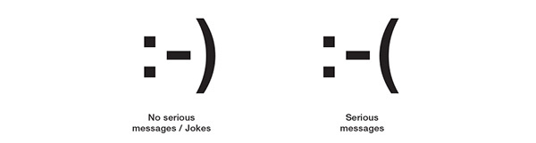

Fotos
Home Page
Sobre
Vida pessoal
Carreira
Fotos
Entrevistas
Folha São Paulo
Revista Galileu
Contato
Curriculum vitae
Mande sua mensagem
Sobre o Sistema
Scott Fahlman em 1984
Scott Fahlman recentemente

Proposta de Scott
Mensagem original de 1982
Matéria do Blog Estadão sobre Scott Fahlman